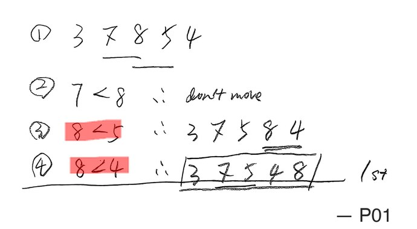
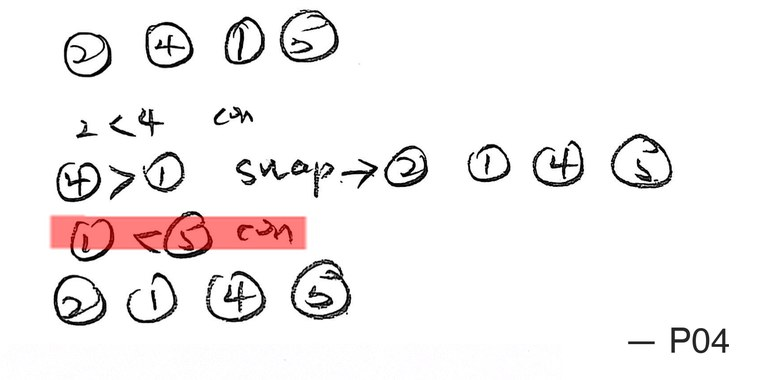
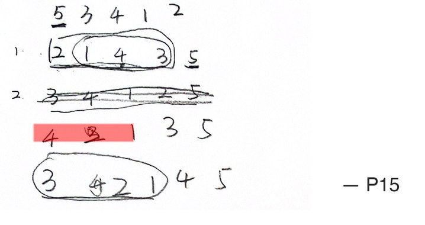
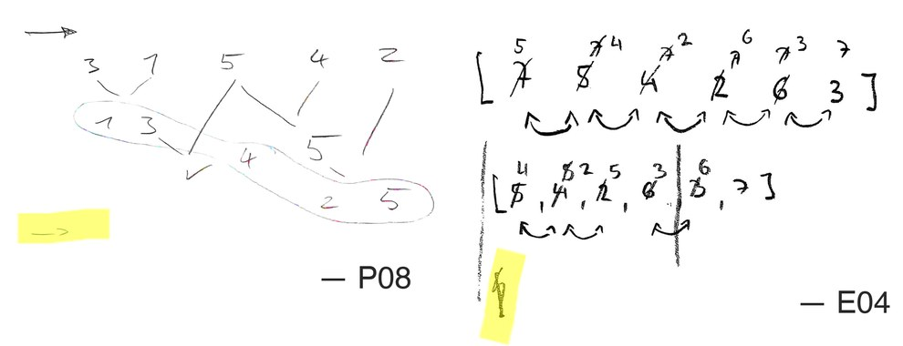
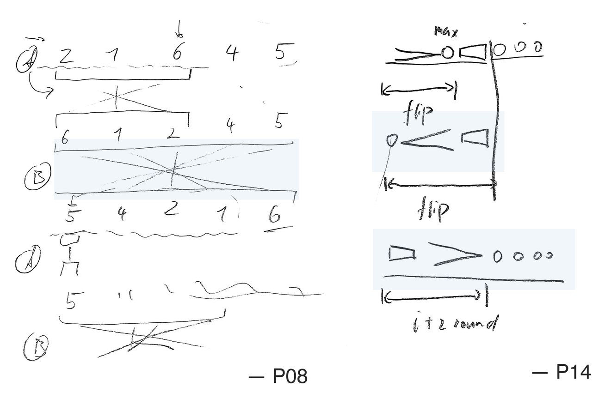
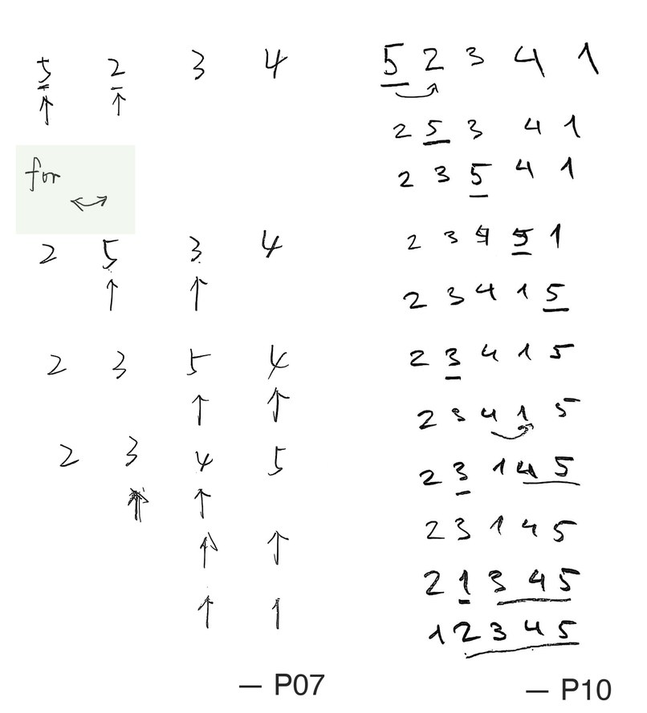
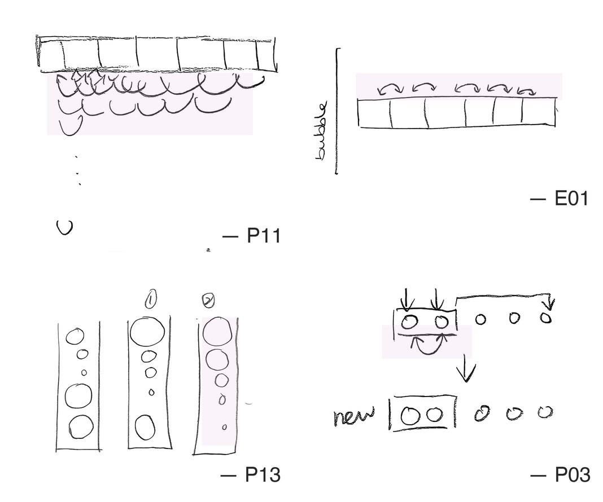
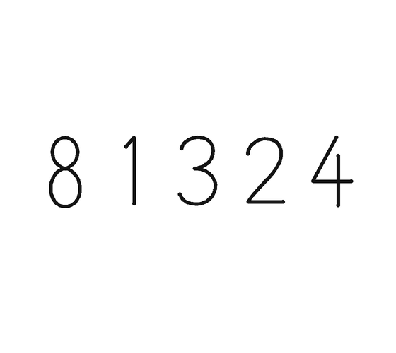
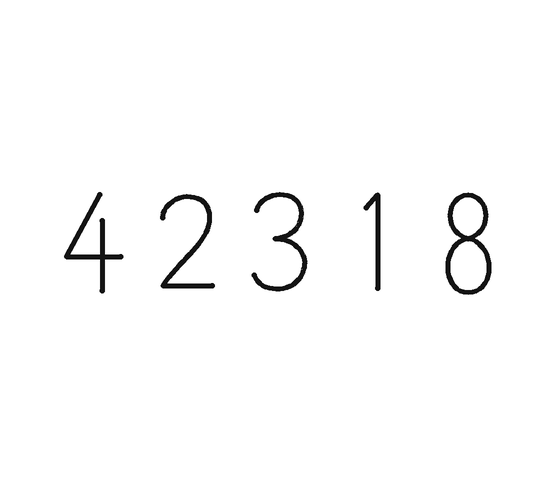
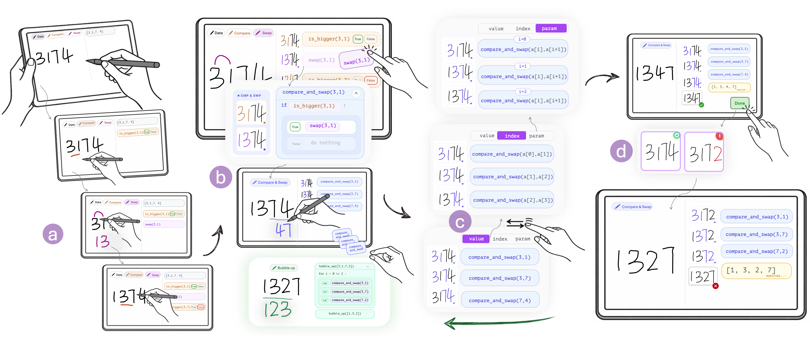

SketchMind: Toward Executable Pen-Based Sketching for Constructing Sorting Algorithms
We often learn algorithms by tracing them on paper.
Supporting algorithmic reasoning through executable sketching
Every pen stroke runs as an operation.
Demo: Alice traces Bubble Sort on [3, 1, 7, 4].
Back in SketchMind: Alice’s array [3, 1, 7, 4], about to be sketched.
Data pen: she writes 3 1 7 4.
Scan: the sketch is recognized as an array.
Compare 3 and 1 → is_bigger(3, 1) = True.
Swap them: the numbers move; nothing is redrawn.
Compare 3 and 7 (False), then 7 and 4 (True).
Swap 7 and 4 → [1, 3, 4, 7]. Looks sorted.
Merge steps into your own reusable pens.
Demo: Alice merges compare and swap into a new pen.
Back to her steps: compare, swap, compare, compare, swap.
Drop swap into the True branch of is_bigger → a new Compare & Swap pen.
One trace, three levels of abstraction.
Demo: Alice views her trace as values, indices, and parameters.
value: compare_and_swap(3, 1)
index: compare_and_swap(a[0], a[1]), positions in the array
param: compare_and_swap(a[i], a[i+1]), the pattern
Demo: SketchMind finds an input where her plan fails.
One pass: [3, 1, 7, 4] → [1, 3, 4, 7]. Done?
Done → SMT: “what if we change 4 to 2?”
Her own steps on [3, 1, 7, 2] → [1, 3, 2, 7]: not fully sorted.
Demo: Alice fixes her plan with a Bubble up loop.
Three compare_and_swap blocks on [3, 1, 7, 2].
Drag them together → bubble_up, for i = 0 to 2: a new Bubble up pen.
Bubble up on [1, 3, 2] → [1, 2, 3, 7].
And on [1, 2].
Done → “All comparisons are correct. Your algorithm is verified!”
What makes a useful counterexample?
How SketchMind finds the counterexample.
a0 > a1a0 ≤ a2a2 > a3a1 ≤ a0→a1 > a0✗ clashes with a0 > a1a0 ≤ a3→a0 > a3✓ Bubble Sort must swap here, in pass 2a1 ≤ a0→a1 > a0✗ clashes with a0 > a1(declare-const a0 a1 a2 a3 Int)unknowns(assert (<= 1 a0 99)) … (distinct a0 a1 a2 a3)valid, distinct(assert (> a0 a1))keep · pass 1(assert (<= a0 a2))(assert (> a2 a3))(assert (> a0 a3))flip · pass 2(minimize (+ (ite (= a0 3) 0 1) …))fewest changed values(minimize (+ (abs (- a0 3)) …))then L1 distance(minimize (+ a0 a1 a2 a3))then smaller sum(check-sat) (get-model)runThree layers, one loop.
On paper, sketches broke down.







What participants told us.


flip all 5: the max goes to the endNo longer having to “figure out how to flip the array in my mind.”P9
A pen is “a function” that can be “used directly” or “defined”.P4, P7
3 1 7 4indexa0 a1 a2 a3parametera[i], a[i+1]Value is most intuitive, while parameter view is “more like coding”.P10
[3,1,4,2]✓ sorted↓[3,2,4,1]✗ not sortedIt “encourages you to think in the opposite direction.”P5
What instructors told us.
- [1] S. Freeman, S. L. Eddy, M. McDonough, M. K. Smith, N. Okoroafor, H. Jordt, and M. P. Wenderoth. 2014. Active Learning Increases Student Performance in Science, Engineering, and Mathematics. PNAS 111, 23, 8410–8415.
- [2] M. T. H. Chi and R. Wylie. 2014. The ICAP Framework: Linking Cognitive Engagement to Active Learning Outcomes. Educational Psychologist 49, 4, 219–243.
- [3] J. Hattie and H. Timperley. 2007. The Power of Feedback. Review of Educational Research 77, 1, 81–112.
- [4] C. D. Hundhausen, S. A. Douglas, and J. T. Stasko. 2002. A Meta-Study of Algorithm Visualization Effectiveness. Journal of Visual Languages & Computing 13, 3, 259–290.
- [5] T. L. Naps et al. 2002. Exploring the Role of Visualization and Engagement in Computer Science Education. In ITiCSE-WGR ’02, 131–152.
Is the nearest counterexample the clearest one?
Her one pass sorts [3, 1, 7, 4]. All three keep her compares deciding as before and end unsorted, but “nearest” is measured differently:
- fewest changed values
- then smallest total change
- then smaller sum
- keep the same numbers
- change only their order, with as few swaps as possible
- keep all her numbers
- add as few new numbers as possible
Our measure is a heuristic. Which counterexample makes her missing step easiest to see?
Can it generalize to more complex algorithms?
For example, Dijkstra would need a graph state, distance labels, visited marks, and new primitive pens:
and new SMT predicates to check a plan on graphs.

Learners already have a visual language.
On paper, learners drew bubbles sized by value, boxes, and circles. Can SketchMind support this expressiveness, beyond handwritten numbers?
We are developing an Abstract pen so they can keep that style: draw anything, then give it a value.
Supporting Algorithmic Reasoning through Executable Sketching

Backup
Demo: Alice sketches Pancake Sort with new pens.
Customized primitives: find_max and flip.
find_max on [2, 4, 1, 3], flip the 4 to the front, flip it to the end.
The steps merge into flip_max_to_front / flip_max_to_end pens.
Applied round by round → [1, 2, 3, 4].
Merged into a pancake_sort pen. Done → array sorted.
A preliminary study with learners and instructors.
Feature ratings 7-point Likert, N = 20, self-reported
usability 5.85 (SD 0.93)